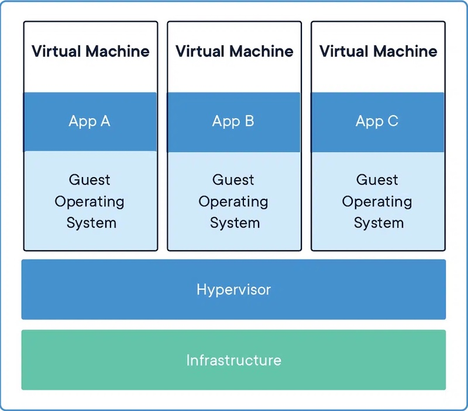
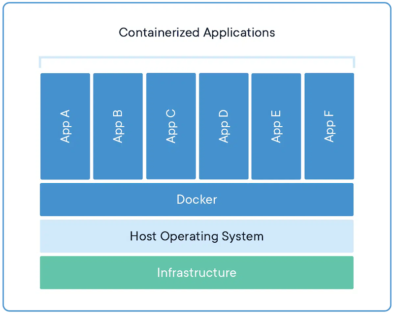
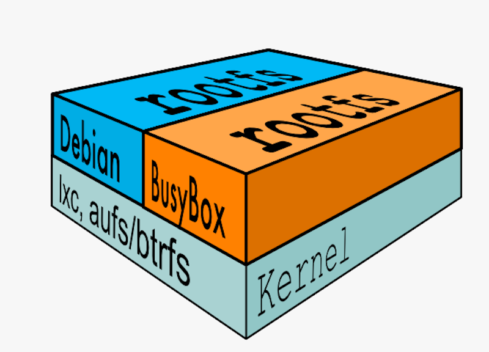
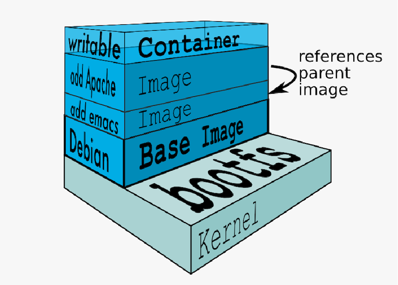

Docker入门
这篇文章主要介绍Docker的相关概念以及它的一些特点。
1. Containers–容器
虚拟化技术VT (Visualization Technology)
虚拟化技术本质上来讲就是可以让一个CPU工作起来就像多个CPU并行运行，从而使得在一台电脑内可以同时运行多个操作系统，也就是常说的虚拟机(Visual Machine)。它的核心技术hypervisor也叫虚拟机监视器(Visual Machine Monitor，VMM)，是一种运行在基础物理服务器和操作系统之间的中间软件层，可以将一台或多台独立的机器虚拟运行于硬件之上，当服务器启动并执行hypervisor时，它会加载所有虚拟机客户端的操作系统同时分配给每一台虚拟机适量的内存，CPU，网络和磁盘。
用来运行这些虚拟操作系统的电脑叫主体机器(host machine)，而这些虚拟出来的操作系统叫客体操作系统(guest os)，hypervisor提供虚拟的作业平台来执行客体操作系统，这些客体操作系统，共同分享虚拟化后的硬件资源，如下图所示：

容器 (Containers)
容器与上面提到的管理程序虚拟化(Hypervisor Visualization，HV)有所不同，管理程序虚拟化通过hypervisor将一台或者多台独立的机器虚拟运行与物理硬件之上，而容器则是直接运行在操作系统内核之上的用户空间，因此容器虚拟化也被称为“操作系统级虚拟化”。
简单来说，容器是应用程序层的抽象，将代码和依赖项打包在一起。多个容器可以在同一台机器上运行，并与其他容器共享操作系统内核，每个容器都可以在用户空间中作为孤立的进程运行。容器占用的空间比虚拟机少很多（容器映像的大小通常为几十MB），可以处理更多的应用程序，并且需要更少的虚拟机和操作系统。

2. Docker
Docker的前身LXC (Linux Container)
LXC被称作Linux容器，可以提供轻量级的虚拟化。它将Linux沙盒化，使得进程之间相互隔离，并且能对各进程资源合理分配，是Docker最初的底层核心。沙盒(sandbox)：一种安全机制，为运行中的程序提供的隔离环境，当程序来源未知或可能造成破坏时可以保证电脑的安全，也常用于对程序的测试。
什么是Docker?
Docker是一个基于Go语言开发的应用容器引擎，在2013年作为开源容器引擎推出，可以说是为容器创建了行业标准。
Docker基于LXC的namspace，cgroup和Union FS三大技术开发：
namespace（命名空间）可以隔离系统资源，把资源分配给不同的命名空间，不同命名空间内的进程互不干扰。当多个用户使用同一台Linux服务器时，每个用户只能访问自己所分配到的系统资源，但是总有一些操作需要有root权限，显然不可能给每一个用户root权限，这时候namespace可以解决这个问题，对该用户虚拟化一个namespace，在这个命名空间里面他拥有root权限，但在服务器层面该用户仍是普通用户。同样从进程的角度来说也是一样，在每一个命名空间内部，该用户的init进程编号pid总是为1，每一个用户都会觉得自己独占这个服务器，但从服务器角度来看，这些pid=1的子进程只不过是父进程通过namespace映射出来的，在父进程内的pid可能为3，也可能为5。
cgroup（control group，控制组）可以对进程使用资源的总量进行限制，对进程的优先级进行分配，统计系统资源的使用量，并对进程挂起/恢复。
Union FS（联合文件系统）是一种分层，轻量级，高性能的文件系统，是Doceker容器分层技术的基础。它使文件系统类似于洋葱一层一层的叠加，这也是为什么Docker镜像包含很多层，虽然外面看起来是一整个的系统。这种分层技术最大的好处就是可以资源共享，比如一台电脑上有很多基于Linux操作系统镜像的容器，通过Union FS只需要在磁盘上保留一份镜像就可以让所有容器共享。Docker的文件系统分为两层：bootfs和rootfs:
bootfs (boot file system)：包含了bootloader和linux内核，用户不能对它做任何修改，启动完成后整个linux内核加载进内存，bootfs会被卸载掉。
rootfs (root file system)：系统根目录结构，与具体linux版本有关。

如上图所示，aufs (advanced multi layered unification filesystem)是一种可堆叠的文件系统，Docker可以在同一内核上运行不同版本的linux，这也是为什么安装linux虚拟机好几个G，而Docker镜像才几百M，其实安装的就是rootfs。
除此之外，Docker镜像具有写时拷贝(Copy-on-Write)技术，即某容器对镜像的修改会被限制在该容器内。上面提到Docker镜像采用分层系统，在构建时一层一层构建，前一层是后一层的基础，每一层构建完就不再发生改变，当启动容器后，Docker会在镜像顶部添加新的一层，这层是可写的，被称为容器层，这层任何的改变都不会影响下面的只读镜像层。

Docker的特点
正如它logo所表示的那样，Docker借鉴了集装箱的概念，它就像鲸鱼，容器就是一个个的集装箱，里面装着各种各样的软件及其配置环境，Docker并不关心集装箱里面具体装着什么东西，所有东西都以相同的方式装载进去，它们可以被运到你想部署的任何地方。基于这种特点，以及上述同传统虚拟方式的对比，很显然它具有以下优势：- 更高效的利用系统资源。
- 更快速的启动时间。
- 一致的运行环境。
- 持续交付和部署。
- 更轻松的迁移，维护和拓展。